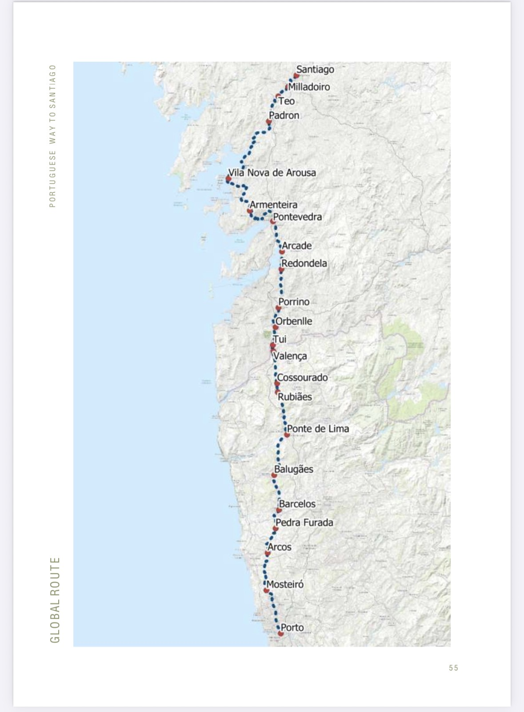

Preparation
After almost 9 months of planning, we are down to the last four days. My suitcase is packed tightly with hiking socks, dried fruit, hiking skirts, and tank tops, all suitable for a long journey of walking and sweating! My backpack sits on the floor surrounded by oodles of hiking paraphernalia, waiting to see whether or not it makes the final cut. Each piece is screaming essential, but I know this isn’t necessarily so. Each item will have a careful review before it walks with me on the trail.
My fellow pilgrims are equally as excited as we have been trading texts, emails, and phone calls all week comparing and contrasting essential equipment and clothing, reviewing travel documents, and preparing technology to enter Portugal. On top of choosing essential clothing, toiletries, and trail shoes, we have been very careful to mark the distances between each of our daily hikes. We are also sharing the burden of our first aid items, technology needs, and customs information so we can all look out for each other during the journey.

I keep asking myself why I am taking on this Camino. My list grows longer by the day, and if you asked me to boil it all down to one thing I would say it is the wonder of it all. I wonder what challenges there will be. I wonder who we will meet along the trail. I wonder how it will feel out there in a place I’ve never been before in a country I’ve never seen and embedded in forests, meadows, and trails I have never encountered. I’m not terribly worried about the physical challenge because of my training for the last nine months. But I do wonder how my body will respond to the mileage day after day after day. I wonder what I will find inside of myself and others as a result of this journey. I wonder if it will provide me with some insight about my next life chapter. I wonder what sounds I will hear from the inside and from the outside, how they will make me feel, and what they’ll make me think about and discover. This opportunity to wander and wonder is completely antithetical to my life prior to this journey. I am a scheduled, predictably reliable, and organized person. I wonder how it will feel to wander…